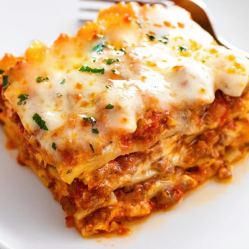

Lasagna

Description
This lasagna recipe takes a little work, but it is so satisfying and filling that it's worth it!
Ingredients
- Meat - This super meaty lasagna has sweet Italian sausage and lean
ground beef.
- Onion and garlic - An onion and two cloves of garlic are cooked with
the meat to add tons of flavor.
- Tomato products - You'll need a can of crushed tomatoes, two cans of
tomato sauce, and two cans of tomato paste.
- Sugar - Two tablespoons of white sugar add subtle sweetness and enhance
the flavor of the sauce.
- Spices and seasonings - This lasagna recipe is flavored with fresh
parsley, dried basil leaves, salt, Italian seasoning, fennel seeds, and black pepper.
- Lasagna noodles - Use store-bought or homemade lasagna noodles.
- Cheeses - Parmesan, mozzarella, and ricotta cheese make this lasagna
extra decadent.
- Egg - An egg helps bind the ricotta so it doesn't ooze out of the
lasagna when you cut into it.
Steps
Here's a very brief overview of what you can expect when you make homemade lasagna:
- Make the meat sauce.
- Cook the noodles.
- Make the ricotta mixture.
- Layer the lasagna according to the recipe instructions.
- Cover with foil and bake.
- Let the lasagna rest before serving.
The detailed layering instructions are as follows:
- Meat sauce
- Noodles
- Ricotta mixture
- Mozzarella slices
- Meat sauce
- Parmesan cheese
- Repeat the layers, then top with the remaining Parmesan.